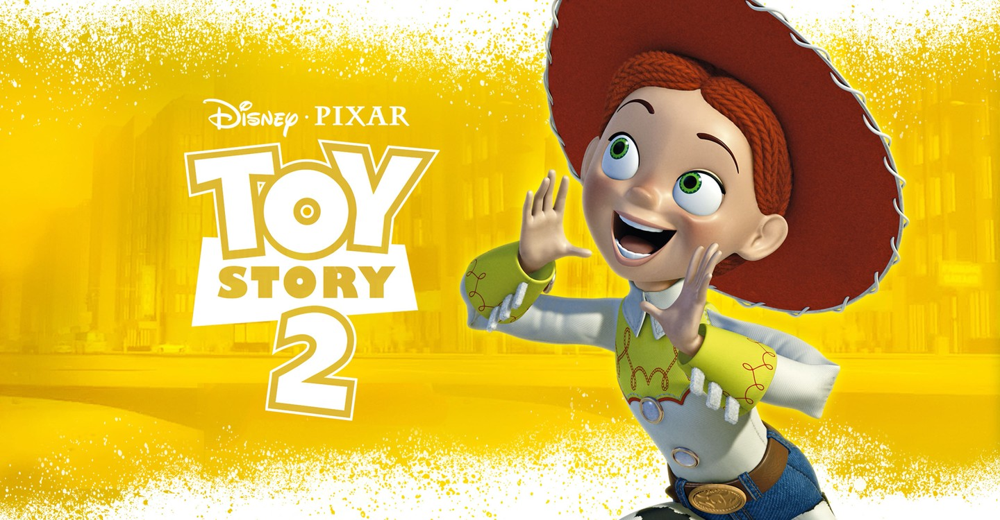

Second Toy Story .

앤디(Andy: 존 모리스 목소리 분)의 어머니(Andy's Mom: 로리 멧칼프 목소리 분)는 쓸모없는 물건들을 팔기 위해 앤디의
장난감 몇가지를 현관 앞뜰에 전시한다. 우디(Woody: 톰 행크스 목소리 분)의 토이 친구인 위지(Wheezy: 죠 랜프트 목소리 분)가
곧 누군가에게 팔려가게 될 운명이란 것을 발견한 우디는 위지를 구출하러 밖으로 나간다. 그러나 우디는 불행하게도 앤디의 집앞을 지나던
토이 수집광 알에게 발견되어 유괴당한다. 다운타운에 대형 토이숍을 갖고 있는 알은 1950년대에 방영됐던 TV 프로 ‘우의 가축몰이’에
나왔던 토이들을 수집하던 중이었으며, 너무나 희귀하여 찾기가 힘들었던 카우보이 토이 우디마저 손에 넣자 일본에서 토이 박물관을 열려는
사업가에게 팔아넘길 계획을 세운다. 우디가 유괴당하는 것을 목격한 버즈 라이트이어(Buzz Lightyear: 팀 알렌 목소리 분)와 토이 친구들은
버즈의 지휘에 따라 우디 구출 작전을 펼치기 시작한다. 쏜살같이 달려오는 자동차들을 피해 목숨을 걸어야 하는 도로 횡단 작전과 승강기 탈출작전
등 기상천외한 어드벤쳐를 겪으며 알(Al McWhiggin: 웨인 나이트 분)의 토이숍에 침투한 버즈 일행은 설상가상으로 버즈의 은하계 숙적인 Z 대왕과 마주치게 된다.